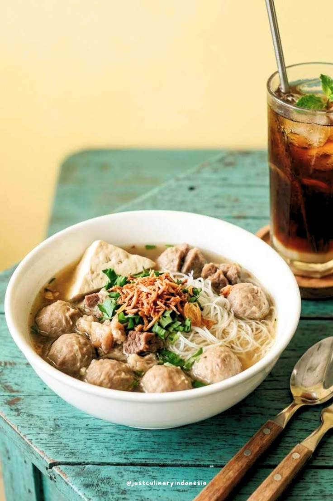
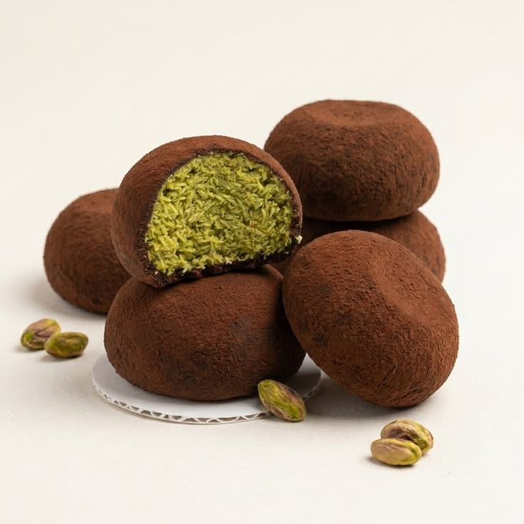
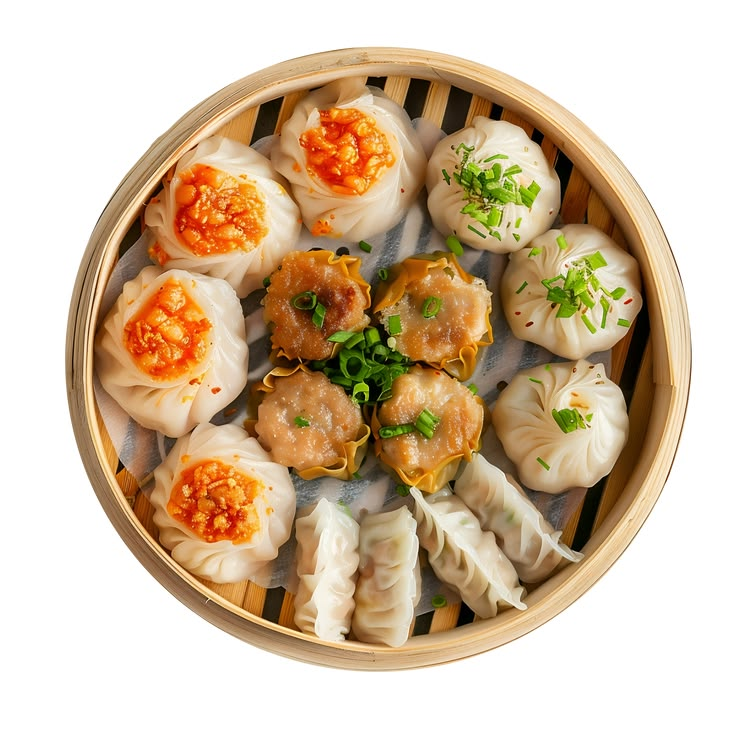
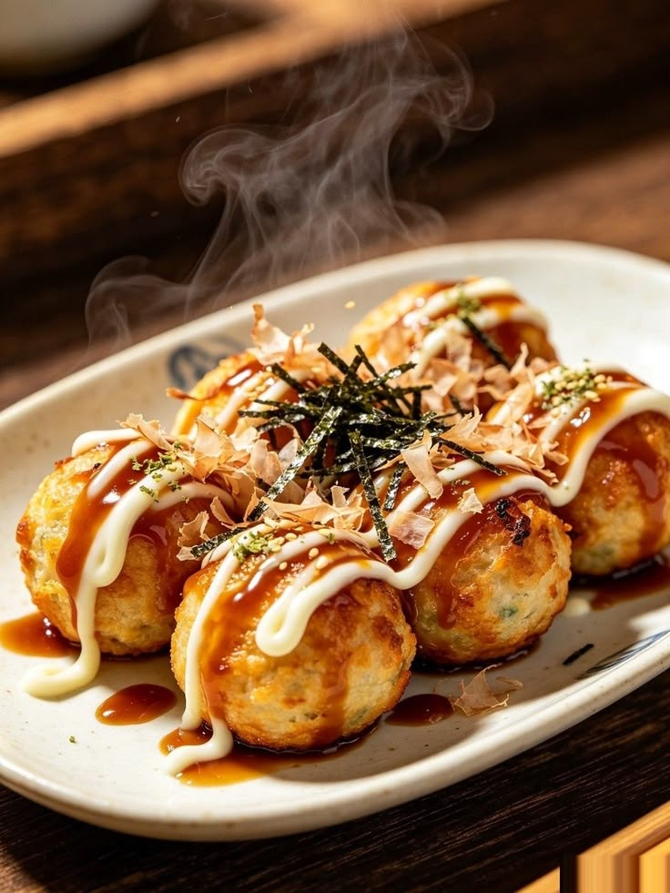
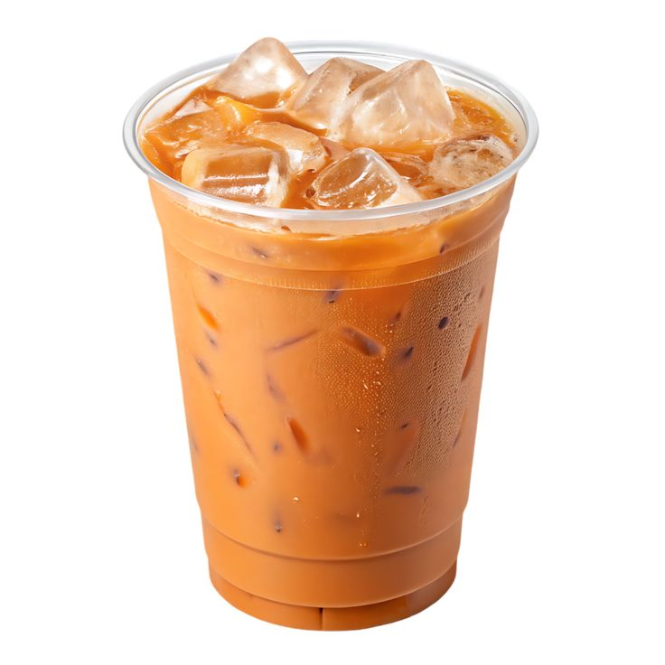

Makanan berat
Yaminlicious
Mie kenyal dengan bumbu gurih manis yang meresap, cocok untuk menemani waktu makan.
Rp20.000
★ 4,8
Mie kenyal dengan bumbu gurih manis yang meresap, cocok untuk menemani waktu makan.

Ayam goreng renyah dengan sambal pedas yang menggugah selera, cocok untuk pecinta makanan pedas.

Hidangan bakso hangat dengan kuah gurih yang cocok dinikmati kapan saja.

Kue cokelat dengan tekstur kenyal dan isian manis yang menggugah selera.

Dimsum ayam lembut dengan cita rasa gurih, cocok untuk camilan kapan saja.

Bola-bola adonan khas Jepang dengan isian gurita, disajikan dengan saus takoyaki dan taburan katsuobushi.

Perpaduan matcha dengan ube yang memberikan rasa khas dan tampilan menarik.

Teh susu khas Thailand dengan rasa manis, creamy, dan menyegarkan.

Perpaduan espresso dan susu dengan tekstur lembut serta rasa kopi yang seimbang.
SMART FOOD GUIDE
Lihat harga dan rating kuliner untuk menemukan pilihan yang sesuai dengan budget kamu.
| No. | Nama Kuliner | Kategori | Harga | Rating |
|---|---|---|---|---|
| 01 | Yaminlicious | Makanan berat | Rp20.000 | |
| 02 | Geprek Nyamber | Makanan berat | Rp25.000 | |
| 03 | Bakso Tjap Haji | Makanan berat | Rp25.000 | |
| 04 | Dubai Chewy Cookie | Camilan | Rp30.000 | |
| 05 | Dimsum Sembilan Ayam | Camilan | Rp20.000 | |
| 06 | Takoyaki | Camilan | Rp25.000 | |
| 07 | Matcha Ube | Minuman | Rp35.000 | |
| 08 | Thai Tea | Minuman | Rp10.000 | |
| 09 | Coffee Latte | Minuman | Rp25.000 |
✳ Harga dan rating ditampilkan sebagai informasi referensi kuliner.